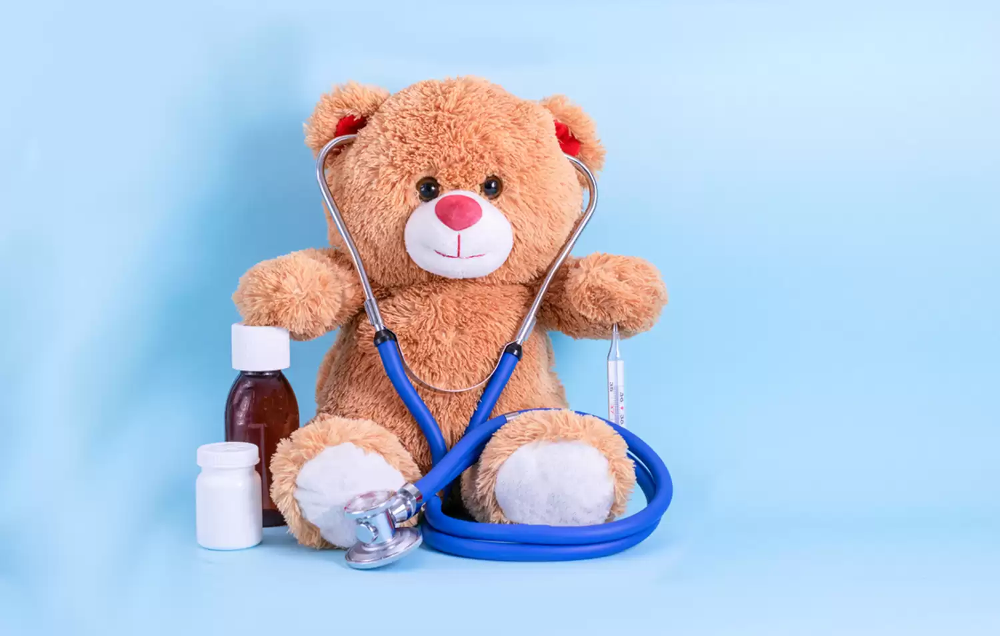

Emergency Care
Our Emergency Care unit operates 24/7, ensuring immediate attention for life-threatening conditions. Equipped with cutting-edge technology and a skilled team of emergency medicine specialists, we prioritize rapid response and comprehensive care. From trauma management to critical care, our facilities are designed to handle any medical emergency efficiently and effectively, ensuring that patients receive timely and appropriate care when they need it the most.
Cardiology Department
The Cardiology Department at Arogya Care Hospital offers a full spectrum of services for diagnosing and treating heart-related ailments. Our team of experienced cardiologists utilizes advanced imaging technologies, stress testing, and comprehensive cardiac rehabilitation programs to ensure the best outcomes for our patients. From routine check-ups to complex interventional procedures, we are committed to heart health and wellness, providing tailored treatment plans that consider each patient’s unique needs.
Neurology Department
Our Neurology Department specializes in diagnosing and treating a wide range of neurological conditions, including stroke, epilepsy, multiple sclerosis, and migraines. Utilizing state-of-the-art diagnostic tools such as EEG and MRI, our neurologists work closely with patients to develop personalized treatment plans, which may include medication management and innovative therapies aimed at enhancing quality of life. We focus on patient-centered care, ensuring that each individual receives the attention and support they need during their treatment journey.
Oncology Department
The Oncology Department at Arogya Care Hospital is dedicated to providing comprehensive cancer care, addressing the unique needs of each patient. From initial diagnosis to treatment and survivorship, we offer personalized plans that may include chemotherapy, radiation therapy, and support services such as nutrition counseling and psychological support. Our compassionate team of oncologists, nurses, and support staff work collaboratively to provide holistic care tailored to each patient’s journey, helping them navigate the challenges of cancer treatment.
Pediatrics Department
Our Pediatrics Department specializes in the healthcare of infants, children, and adolescents. With a team of pediatricians and child specialists, we provide preventive care, vaccinations, and treatment for various health issues. Our approach is family-centered, ensuring that both children and their families are supported throughout their healthcare journey. We emphasize preventive care and education, helping families maintain healthy lifestyles and understand their child's health needs.
Orthopedic Surgery
The Orthopedic Surgery Department at Arogya Care Hospital offers expert care for musculoskeletal disorders. Our orthopedic surgeons specialize in surgical and non-surgical treatments for conditions affecting bones, joints, and ligaments. With advanced techniques and rehabilitation services, we aim to restore mobility and improve the quality of life for our patients, providing personalized treatment plans that are tailored to individual needs.
Maternity Services

Our Maternity Services provide comprehensive care throughout the pregnancy journey, from preconception counseling to postnatal support. We prioritize the health and well-being of mothers and newborns, offering personalized birth plans and expert care during labor and delivery. Our dedicated team ensures a safe and supportive environment for every family, including lactation consultations and parenting education to help new parents adjust to their roles.
Dialysis Center
Our Dialysis Center is equipped with the latest technology to provide high-quality care for patients with kidney disease. We offer both hemodialysis and peritoneal dialysis options, along with personalized support from our dedicated nursing team. Our goal is to enhance the well-being of our patients while they undergo treatment, providing a comfortable and compassionate environment. We also focus on educating patients about their condition and empowering them to manage their health.
Radiology & Imaging
The Radiology & Imaging Department offers a wide range of diagnostic imaging services, including X-ray, MRI, CT scans, and ultrasound. Our team of radiologists utilizes the latest technology to ensure accurate diagnoses while prioritizing patient comfort and safety. We aim to provide timely results to support effective treatment plans, ensuring that patients receive the highest standard of care during their diagnostic journey.